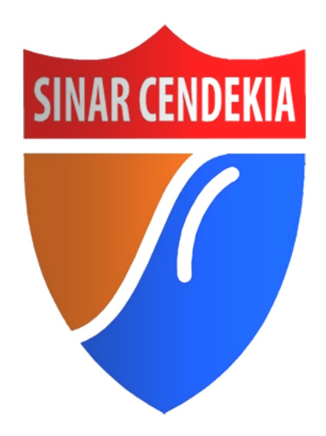

Ilmu Pengetahuan Alam (IPA)
Jurusan IPA mempelajari fenomena alam dan berbagai konsep ilmiah melalui pembelajaran yang logis, sistematis, serta berbasis pengamatan.
Mata pelajaran utama
- Matematika
- Fisika
- Kimia
- Biologi

SMA IslamJurusan IPA mempelajari fenomena alam dan berbagai konsep ilmiah melalui pembelajaran yang logis, sistematis, serta berbasis pengamatan.
Jurusan IPS mempelajari kehidupan masyarakat, kegiatan ekonomi, sejarah, dan hubungan sosial untuk memahami berbagai fenomena di lingkungan sekitar.
Data Peserta Didik
| No. | Jurusan | Jumlah Siswa |
|---|---|---|
| 1 | Ilmu Pengetahuan Alam (IPA) | 120 |
| 2 | Ilmu Pengetahuan Sosial (IPS) | 100 |
| Total | 220 | |
Catatan: jumlah siswa di atas adalah angka contoh untuk memenuhi kebutuhan tabel tugas, bukan data resmi sekolah.